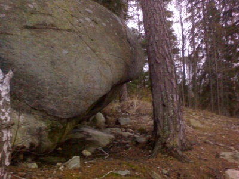

Två områden finns.
Liten bumling vid korsningen alfred nobels väg och tvärvägen (ligger jämte grusparkeringen). Finns även en liten vägg bakom bumlingen.
OBS! Den stora väggen som tidigare var fylld med grus går nu sommaren 2013 att klättra på igen. Gruset är borta och växtligheten är på väg tillbaka. Mer information om den stora väggen finns i Stockholmsföraren på sid 272.
Ingen info om lilla bumlingen.
<googlemap width=350 height=300 lat="59.21617" lon="17.94" zoom="13" type="map" controls="small"> </googlemap>
Två boulders märkta med pilar
1. 6b~ ???
2. 5a~ ???
2b. 6c 20080316 Sittstart i undercling
Flemingsbergsbouldern, åk huddingevägen sväng in flemingsbergsleden, ca 10min från pendeltåget.
boulders:

A. 7A~ ???. Sittstart. Går upp längs leden "dyno kid". Slutar på ett bra grepp i klippavstånd av första bulten.
B. 7B+ Skinnkiller. Sittstart. Samma start som "A." Slutar på en sloper-jugge.
C. 7C+ Fingerkiller. Sittstart. Samma start som Skinnkiller. Drar lite höger då man tar det vassa skinkiller-greppet med vänster hand. Samma slut som skinnkiller.
C. 8A Skinncold. Sittstart. Går som Fingerkiller men fortsätter högt upp och sedan till vänster ihop till dyno-kids jugge.
D. 7C~ West. Sittstart. Olika start varianter florerar.
E. 7C~ East Sittstart. Börjar på jugghyllan, upp till en sloper-triangel, drar vänster och sedan upp i "diedern".
F. 8A Midtown, Start som East och sedan rakt upp.
G. 7B ???. Sittstart. Samma start som east, fast ta slopern med vänster-hand, går sedan till sloprarna åt höger.
H. 6C ???. Sittstart. Juggar till sloprarna.
leder:
7b ??? 3bb. går ca 20 meter till vänster om bouldrarna.
7c dyno-kid, dyno-crux
8a Cold Case. Sittstart? Går till höger om dyno-kid. Drar lite höger och sedan ihop med dyno-kid.
Kategori:Stockholm
Kategori:Bouldering